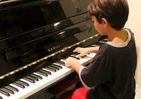
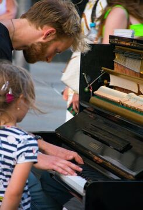

Watch lessonLesson 1 · What You’ll Need & Posture
Set up your practice space and learn healthy piano posture.
Use these tutorials to practice fundamentals, then schedule live one-on-one instruction for personalized feedback and a clear path forward.
These pre-made lessons cover posture, note names, reading, technique, music theory, and a popular repertoire piece.

Watch lessonSet up your practice space and learn healthy piano posture.

Watch lessonBuild the note knowledge needed for reading music.
Connect notation on the page to the keys on the piano.
Practice a focused exercise for coordination and control.
 Watch lesson
Watch lesson
Explore the concepts that support musical understanding.
 Watch lesson
Watch lesson
Work through a recognizable piece with guided instruction.
Virtual lessons can support beginners learning scales and basic pieces, advanced players learning repertoire, music theory, sight-reading, improvisation, and performance confidence.
Schedule an Online Evaluation